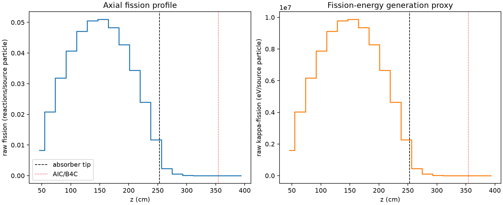
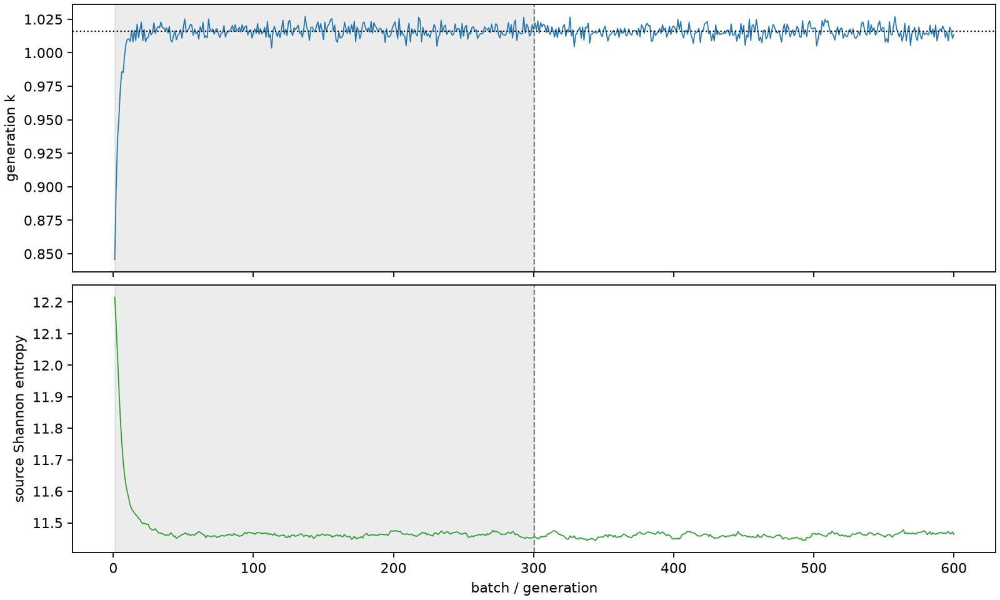

| field | value |
|---|---|
| experiment | V2-STAGE_256_OGRENCI_04-0012 |
| k | 1.016008725825933 |
| MC standard error | 0.00017127253814299513 |
| seconds | 1030.3771478319977 |
| acceptance | not_assessed |
| convergence | review_required |
Completed is output integrity only; physical and statistical review required. Zero tallies do not prove zero production or zero uncertainty.
| diagnostic | value |
|---|---|
| geometric fuel voxels | 5280 |
| zero fission tally voxels | 325 |
| low signal fuel voxels | 1303 |
| low signal fission share | 8.533864046200108e-05 |
| low signal kappa share | 8.538237780165386e-05 |
| important fission share | 0.9500095246008187 |
| previous filter included | 3977 |
| duration estimate s | 1562.5173488400023 |
| actual minus estimate s | -532.1402010080046 |
| fission relative MC error | statistics |
|---|---|
| all_geometric_fuel | {"voxels": 5280, "positive_mean_voxels": 4955, "zero_mean_voxels": 325, "undefined_relative_error_voxels": 325, "median": 0.010104466883457841, "p95": 0.8062467664191884, "maximum": 1.0000000000000002} |
| low_signal | {"voxels": 1303, "positive_mean_voxels": 978, "zero_mean_voxels": 325, "undefined_relative_error_voxels": 325, "median": 0.5363085704542349, "p95": 1.0, "maximum": 1.0000000000000002} |
| important_95pct | {"voxels": 2691, "positive_mean_voxels": 2691, "zero_mean_voxels": 0, "undefined_relative_error_voxels": 0, "median": 0.007285968663949386, "p95": 0.010549647847314377, "maximum": 0.015782995907064952} |
| outside_previous_filter | {"voxels": 1303, "positive_mean_voxels": 978, "zero_mean_voxels": 325, "undefined_relative_error_voxels": 325, "median": 0.5363085704542349, "p95": 1.0, "maximum": 1.0000000000000002} |
| kappa_fission relative MC error | statistics |
|---|---|
| all_geometric_fuel | {"voxels": 5280, "positive_mean_voxels": 4955, "zero_mean_voxels": 325, "undefined_relative_error_voxels": 325, "median": 0.010092046167654252, "p95": 0.8052497070357764, "maximum": 1.0000000000000002} |
| low_signal | {"voxels": 1303, "positive_mean_voxels": 978, "zero_mean_voxels": 325, "undefined_relative_error_voxels": 325, "median": 0.5352250820297739, "p95": 1.0, "maximum": 1.0000000000000002} |
| important_95pct | {"voxels": 2691, "positive_mean_voxels": 2691, "zero_mean_voxels": 0, "undefined_relative_error_voxels": 0, "median": 0.007277251934360809, "p95": 0.01053704804182652, "maximum": 0.01576245691228979} |
| outside_previous_filter | {"voxels": 1303, "positive_mean_voxels": 978, "zero_mean_voxels": 325, "undefined_relative_error_voxels": 325, "median": 0.5352250820297739, "p95": 1.0, "maximum": 1.0000000000000002} |
| axial bin | fission share | kappa-fission share |
|---|---|---|
| 1 | 0.02000550886164682 | 0.02000664318076686 |
| 2 | 0.050272998036635964 | 0.05027290444558891 |
| 3 | 0.0768112790923648 | 0.07681095547857425 |
| 4 | 0.09826765284176554 | 0.0982669560048846 |
| 5 | 0.11360409508584776 | 0.11360356926619486 |
| 6 | 0.12199569327894982 | 0.12199519696503906 |
| 7 | 0.12296226384191339 | 0.12296144452603988 |
| 8 | 0.11652251528991825 | 0.11652161337395926 |
| 9 | 0.10320297618766779 | 0.1032021865863469 |
| 10 | 0.08299459267115775 | 0.08299411745137476 |
| 11 | 0.05776551715617087 | 0.05776525069229324 |
| 12 | 0.028315288365478607 | 0.028316281230730794 |
| 13 | 0.005616826792910866 | 0.005619283651694782 |
| 14 | 0.0012789383301409871 | 0.0012795378462545997 |
| 15 | 0.00029415649397714235 | 0.00029431424340049724 |
| 16 | 6.892401912918716e-05 | 6.89635450434679e-05 |
| 17 | 1.551303666447283e-05 | 1.551997639823971e-05 |
| 18 | 4.371745719001948e-06 | 4.3725488395260065e-06 |
| 19 | 7.362419433378084e-07 | 7.362190744724881e-07 |
| 20 | 1.5262999775026462e-07 | 1.527675010153463e-07 |
Histories include the inactive-to-active transition at batch 300. kappa-fission approximates fission energy production, not total heat deposition.

